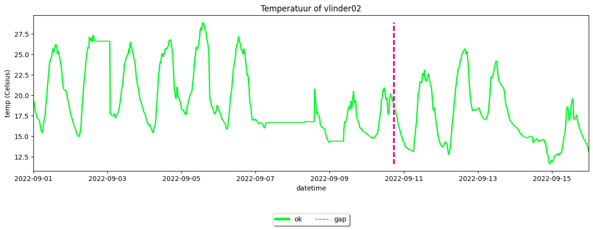
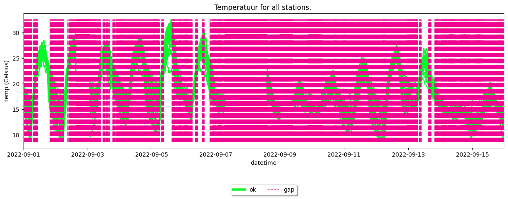
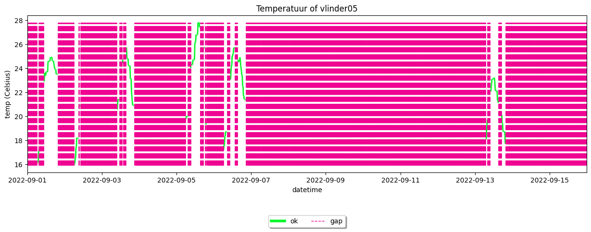
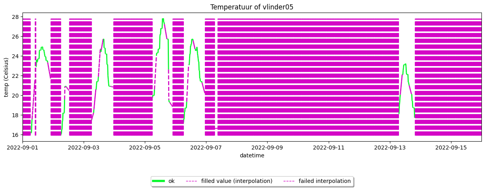
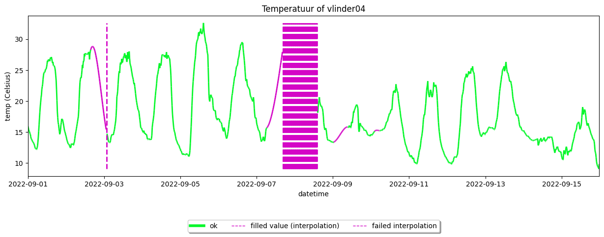
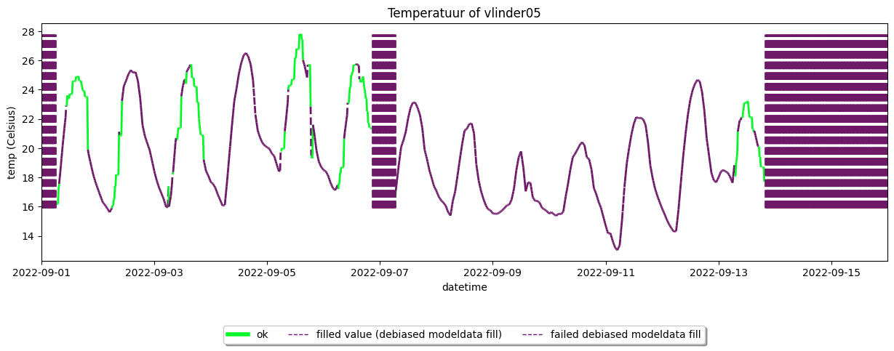

Demo example: filling gaps#
This example is the continuation of the previous example: Apply quality control. This example serves as a demonstration of how to fill gaps.
[1]:
import metobs_toolkit
metobs_toolkit.add_StreamHandler(setlvl='WARNING')
your_dataset = metobs_toolkit.Dataset()
your_dataset.update_file_paths(
input_data_file=metobs_toolkit.demo_datafile, # path to the data file
input_metadata_file=metobs_toolkit.demo_metadatafile,
template_file=metobs_toolkit.demo_template,
)
Finding Gaps#
When you import your datafile, the toolkit will look for gaps in your data. This is done by assuming that each station has a perfect frequency of observations (i.g. 5 minutes), a start timestamp, and an end timestamp. The toolkit can construct a perfect set of timestamps for which an observation is expected. The toolkit will try to find an observation for each (perfect) timestamp, using timestamp tolerances if specified.
When it is not possible to assign an observation to a timestamp, we have a gap. If multiple consecutive timestaps could not be matched to observations, we also have a gap but the gap spans a longer period.
[2]:
your_dataset.import_data_from_file(
freq_estimation_method="highest", #which method to use for estimating a frequency
freq_estimation_simplify_tolerance="2min", #tolerance for simplifying a frequency
origin_simplify_tolerance="5min", #tolerance for simplifying an origin (=start timestap per station)
timestamp_tolerance="4min") #tolerance for mapping an observation to a (perfect) timestamp
your_dataset.coarsen_time_resolution(freq='15T')
The following data columns are renamed because of special meaning by the toolkit: {}
Luchtdruk is present in the datafile, but not found in the template! This column will be ignored.
Neerslagintensiteit is present in the datafile, but not found in the template! This column will be ignored.
Neerslagsom is present in the datafile, but not found in the template! This column will be ignored.
Rukwind is present in the datafile, but not found in the template! This column will be ignored.
Luchtdruk_Zeeniveau is present in the datafile, but not found in the template! This column will be ignored.
Globe Temperatuur is present in the datafile, but not found in the template! This column will be ignored.
The following metadata columns are renamed because of special meaning by the toolkit: {}
These stations will be removed because of only having one record: []
A 0 days 00:00:00 is given as an argument for a timedelta.
/home/thoverga/Documents/VLINDER_github/MetObs_toolkit/metobs_toolkit/datasetbase.py:137: FutureWarning: 'T' is deprecated and will be removed in a future version. Please use 'min' instead of 'T'.
dt = pd.Timedelta(timedeltaarg)
These missing observations are indicated in time series plots as vertical lines:
[3]:
your_dataset.get_station('vlinder02').make_plot(colorby='label')
/home/thoverga/Documents/VLINDER_github/MetObs_toolkit/metobs_toolkit/dataset_core.py:503: FutureWarning: The behavior of DataFrame concatenation with empty or all-NA entries is deprecated. In a future version, this will no longer exclude empty or all-NA columns when determining the result dtypes. To retain the old behavior, exclude the relevant entries before the concat operation.
combdf = pd.concat([df, outliersdf]) # combine the two
[3]:
<Axes: title={'center': 'Temperatuur of vlinder02'}, xlabel='datetime', ylabel='temp (Celsius)'>

Inspect gaps#
The gaps are stored in the form of at the .gaps attribute of a Dataset. Each gap is defined by * an observationtype * a station name * a start timestamp * a end timestamp
[4]:
your_dataset.gaps
[4]:
[humidity-gap of vlinder02 for 2022-09-10 17:15:00+00:00 --> 2022-09-10 17:15:00+00:00, duration: 0 days 00:00:00 or 1 records.,
humidity-gap of vlinder02 for 2022-09-10 17:45:00+00:00 --> 2022-09-10 17:45:00+00:00, duration: 0 days 00:00:00 or 1 records.,
temp-gap of vlinder02 for 2022-09-10 17:15:00+00:00 --> 2022-09-10 17:15:00+00:00, duration: 0 days 00:00:00 or 1 records.,
temp-gap of vlinder02 for 2022-09-10 17:45:00+00:00 --> 2022-09-10 17:45:00+00:00, duration: 0 days 00:00:00 or 1 records.,
wind_direction-gap of vlinder02 for 2022-09-10 17:15:00+00:00 --> 2022-09-10 17:15:00+00:00, duration: 0 days 00:00:00 or 1 records.,
wind_direction-gap of vlinder02 for 2022-09-10 17:45:00+00:00 --> 2022-09-10 17:45:00+00:00, duration: 0 days 00:00:00 or 1 records.,
wind_speed-gap of vlinder02 for 2022-09-10 17:15:00+00:00 --> 2022-09-10 17:15:00+00:00, duration: 0 days 00:00:00 or 1 records.,
wind_speed-gap of vlinder02 for 2022-09-10 17:45:00+00:00 --> 2022-09-10 17:45:00+00:00, duration: 0 days 00:00:00 or 1 records.]
To have a tabular representation of the present gaps, use the ´.get_gaps_fill_df()` method. This method returns a dataframe that contains all the records present in the gaps. When gapfill methods are applied, the filled values appear in this dataframe.
[5]:
your_dataset.get_gaps_fill_df()
[5]:
| value | fill_method | msg | |||
|---|---|---|---|---|---|
| name | obstype | datetime | |||
| vlinder02 | humidity | 2022-09-10 17:15:00+00:00 | NaN | not filled | None |
| 2022-09-10 17:45:00+00:00 | NaN | not filled | None | ||
| temp | 2022-09-10 17:15:00+00:00 | NaN | not filled | None | |
| 2022-09-10 17:45:00+00:00 | NaN | not filled | None | ||
| wind_direction | 2022-09-10 17:15:00+00:00 | NaN | not filled | None | |
| 2022-09-10 17:45:00+00:00 | NaN | not filled | None | ||
| wind_speed | 2022-09-10 17:15:00+00:00 | NaN | not filled | None | |
| 2022-09-10 17:45:00+00:00 | NaN | not filled | None |
Outliers to gaps and missing observations#
In practice, the observations that are labeled as outliers are often interpreted as gaps (because we assume that the observation value is erroneous) so that they can be filled. In the toolkit it is possible to convert the outliers to gaps by using the convert_outliers_to_gaps().
[6]:
#first apply (default) quality control
your_dataset.apply_quality_control(obstype='temp') #we use the default settings in this example
#Interpret the outliers as missing observations and gaps.
your_dataset.convert_outliers_to_gaps()
#Inspect your gaps
your_dataset.make_plot(colorby='label')
The windows are too small for stations ['vlinder01', 'vlinder02', 'vlinder03', 'vlinder04', 'vlinder05', 'vlinder06', 'vlinder07', 'vlinder08', 'vlinder09', 'vlinder10', 'vlinder11', 'vlinder12', 'vlinder13', 'vlinder14', 'vlinder15', 'vlinder16', 'vlinder17', 'vlinder18', 'vlinder19', 'vlinder20', 'vlinder21', 'vlinder22', 'vlinder23', 'vlinder24', 'vlinder25', 'vlinder26', 'vlinder27', 'vlinder28'] to perform persistance check
The current gaps will be removed and new gaps are formed!
/home/thoverga/Documents/VLINDER_github/MetObs_toolkit/metobs_toolkit/dataset_core.py:503: FutureWarning: The behavior of DataFrame concatenation with empty or all-NA entries is deprecated. In a future version, this will no longer exclude empty or all-NA columns when determining the result dtypes. To retain the old behavior, exclude the relevant entries before the concat operation.
combdf = pd.concat([df, outliersdf]) # combine the two
[6]:
<Axes: title={'center': 'Temperatuur for all stations. '}, xlabel='datetime', ylabel='temp (Celsius)'>

When plotting a single station, the figure becomes more clear
[7]:
your_dataset.get_station('vlinder05').make_plot(colorby='label')
/home/thoverga/Documents/VLINDER_github/MetObs_toolkit/metobs_toolkit/dataset_core.py:503: FutureWarning: The behavior of DataFrame concatenation with empty or all-NA entries is deprecated. In a future version, this will no longer exclude empty or all-NA columns when determining the result dtypes. To retain the old behavior, exclude the relevant entries before the concat operation.
combdf = pd.concat([df, outliersdf]) # combine the two
[7]:
<Axes: title={'center': 'Temperatuur of vlinder05'}, xlabel='datetime', ylabel='temp (Celsius)'>

Fill gaps#
In the toolkit, two groups of methods are implemented: interpolation methods and by making use of external modeldata.
NOTE: In this example, we use a single station (vlinder05) for demonstration. All methods can be directly applied on a Dataset, you do not need to apply this on all stations separately.
Interpolation methods#
The most straightforward method to fill a gap is by using interpolation. Linear interpolation is the best-known form of interpolation, but there are also more advanced forms of interpolation. In the toolkit, we can easily interpolate the gaps by making use of the Dataset.interpolate_gaps() method.
[8]:
your_dataset.interpolate_gaps(obstype='temp', #Which gaps to fill
overwrite_fill = True, #Overwrite previous filled values if they are present
method='linear', #which interpolation method
max_consec_fill=10, #maximum number of consecutive missing records to fill.
)
your_dataset.get_station('vlinder05').make_plot(colorby='label')
Cannot fill temp-gap of vlinder05 for 2022-09-01 00:00:00+00:00 --> 2022-09-01 05:45:00+00:00, duration: 0 days 05:45:00 or 24 records., because leading record is not valid.
Cannot fill temp-gap of vlinder05 for 2022-09-13 20:00:00+00:00 --> 2022-09-15 23:45:00+00:00, duration: 2 days 03:45:00 or 208 records., because trailing record is not valid.
/home/thoverga/Documents/VLINDER_github/MetObs_toolkit/metobs_toolkit/dataset_core.py:503: FutureWarning: The behavior of DataFrame concatenation with empty or all-NA entries is deprecated. In a future version, this will no longer exclude empty or all-NA columns when determining the result dtypes. To retain the old behavior, exclude the relevant entries before the concat operation.
combdf = pd.concat([df, outliersdf]) # combine the two
[8]:
<Axes: title={'center': 'Temperatuur of vlinder05'}, xlabel='datetime', ylabel='temp (Celsius)'>

As you can see, some gaps are (partially) filled others are not filled. This is because a filling criterea was not matched. By using the Dataset.get_gaps_fill_df() method, it becomes clear why some gaps could not be filled.
[9]:
your_dataset.get_station('vlinder05').get_gaps_fill_df()
[9]:
| value | fill_method | msg | |||
|---|---|---|---|---|---|
| name | obstype | datetime | |||
| vlinder05 | temp | 2022-09-01 00:00:00+00:00 | NaN | failed interpolation | to few leading records (0 found but 1 needed). |
| 2022-09-01 00:15:00+00:00 | NaN | failed interpolation | to few leading records (0 found but 1 needed). | ||
| 2022-09-01 00:30:00+00:00 | NaN | failed interpolation | to few leading records (0 found but 1 needed). | ||
| 2022-09-01 00:45:00+00:00 | NaN | failed interpolation | to few leading records (0 found but 1 needed). | ||
| 2022-09-01 01:00:00+00:00 | NaN | failed interpolation | to few leading records (0 found but 1 needed). | ||
| ... | ... | ... | ... | ||
| 2022-09-15 22:45:00+00:00 | NaN | failed interpolation | to few trailing records (0 found but 1 needed). | ||
| 2022-09-15 23:00:00+00:00 | NaN | failed interpolation | to few trailing records (0 found but 1 needed). | ||
| 2022-09-15 23:15:00+00:00 | NaN | failed interpolation | to few trailing records (0 found but 1 needed). | ||
| 2022-09-15 23:30:00+00:00 | NaN | failed interpolation | to few trailing records (0 found but 1 needed). | ||
| 2022-09-15 23:45:00+00:00 | NaN | failed interpolation | to few trailing records (0 found but 1 needed). |
1219 rows × 3 columns
If you are interested in all details of a specific gap, you can find that gap using the Dataset.find_gap() method, and then inspect the specific Gap().
[10]:
from datetime import datetime
gap_of_interest = your_dataset.get_station('vlinder05').find_gap(stationname='vlinder05',
obstype='temp',
in_gap_timestamp = datetime(2022,9,3,1)) #2022-09-03 01:00:00
gap_of_interest.get_info()
#or inspect the gapdf
gap_of_interest.gapdf
---- Gap info -----
(Note: gaps start and end are defined on the frequency estimation of the native dataset.)
* Gap for station: vlinder05
* Start gap: 2022-09-02 10:15:00+00:00
* End gap: 2022-09-03 05:45:00+00:00
* Duration gap: 0 days 19:30:00
* For temp
* Gapfill status >>>> Partially filled gap
---- Anchor Data Frame -----
temp fill_method msg
name datetime
vlinder05 2022-09-02 10:00:00+00:00 20.9 leading period ok
2022-09-03 06:00:00+00:00 17.4 trailing period ok
---- Gap Data Frame -----
temp temp_fill fill_method \
name datetime
vlinder05 2022-09-02 10:15:00+00:00 NaN 20.85625 interpolation
2022-09-02 10:30:00+00:00 NaN 20.81250 interpolation
2022-09-02 10:45:00+00:00 NaN 20.76875 interpolation
2022-09-02 11:00:00+00:00 NaN 20.72500 interpolation
2022-09-02 11:15:00+00:00 NaN 20.68125 interpolation
... ... ... ...
2022-09-03 04:45:00+00:00 NaN NaN failed interpolation
2022-09-03 05:00:00+00:00 NaN NaN failed interpolation
2022-09-03 05:15:00+00:00 NaN NaN failed interpolation
2022-09-03 05:30:00+00:00 NaN NaN failed interpolation
2022-09-03 05:45:00+00:00 NaN NaN failed interpolation
msg
name datetime
vlinder05 2022-09-02 10:15:00+00:00 ok (method: linear)
2022-09-02 10:30:00+00:00 ok (method: linear)
2022-09-02 10:45:00+00:00 ok (method: linear)
2022-09-02 11:00:00+00:00 ok (method: linear)
2022-09-02 11:15:00+00:00 ok (method: linear)
... ...
2022-09-03 04:45:00+00:00 Permitted_by_max_consecutive_fill
2022-09-03 05:00:00+00:00 Permitted_by_max_consecutive_fill
2022-09-03 05:15:00+00:00 Permitted_by_max_consecutive_fill
2022-09-03 05:30:00+00:00 Permitted_by_max_consecutive_fill
2022-09-03 05:45:00+00:00 Permitted_by_max_consecutive_fill
[79 rows x 4 columns]
[10]:
| temp | temp_fill | fill_method | msg | ||
|---|---|---|---|---|---|
| name | datetime | ||||
| vlinder05 | 2022-09-02 10:15:00+00:00 | NaN | 20.85625 | interpolation | ok (method: linear) |
| 2022-09-02 10:30:00+00:00 | NaN | 20.81250 | interpolation | ok (method: linear) | |
| 2022-09-02 10:45:00+00:00 | NaN | 20.76875 | interpolation | ok (method: linear) | |
| 2022-09-02 11:00:00+00:00 | NaN | 20.72500 | interpolation | ok (method: linear) | |
| 2022-09-02 11:15:00+00:00 | NaN | 20.68125 | interpolation | ok (method: linear) | |
| ... | ... | ... | ... | ... | |
| 2022-09-03 04:45:00+00:00 | NaN | NaN | failed interpolation | Permitted_by_max_consecutive_fill | |
| 2022-09-03 05:00:00+00:00 | NaN | NaN | failed interpolation | Permitted_by_max_consecutive_fill | |
| 2022-09-03 05:15:00+00:00 | NaN | NaN | failed interpolation | Permitted_by_max_consecutive_fill | |
| 2022-09-03 05:30:00+00:00 | NaN | NaN | failed interpolation | Permitted_by_max_consecutive_fill | |
| 2022-09-03 05:45:00+00:00 | NaN | NaN | failed interpolation | Permitted_by_max_consecutive_fill |
79 rows × 4 columns
Higher order interpolation demo#
When using more advanced interpolation methods, often multiple anchors (= the good records that serve as anchor points for the interpolation). In the toolkit we will refer to a leading period and a trailing period, the anchor’s observations before and after the gaps respectively.
Here is an example on applying a polynomial interpolation on gaps.
[11]:
your_dataset.get_station('vlinder04').interpolate_gaps(
method='polynomial',
overwrite_fill=True,
n_leading_anchors=3, #at least 3 leading anchors are needed for 3th order polynomial interpolation
n_trailing_anchors=4, #at least 3 trailing anchors are needed for 3th order polynomial interpolation
max_consec_fill=40,
max_lead_to_gap_distance='60min', #the maximum distance (in time) beween the leading anchors and the start of the gap.
method_kwargs={'order':3}, #all extra arguments to pass to the pandas.Dataframe.interpolate method.
)
your_dataset.get_station('vlinder04').make_plot(colorby='label')
The filling of temp-gap of vlinder04 for 2022-09-02 15:30:00+00:00 --> 2022-09-03 01:30:00+00:00, duration: 0 days 10:00:00 or 41 records., will be overwritten!
The filling of temp-gap of vlinder04 for 2022-09-07 06:30:00+00:00 --> 2022-09-08 14:00:00+00:00, duration: 1 days 07:30:00 or 127 records., will be overwritten!
The filling of temp-gap of vlinder04 for 2022-09-09 00:30:00+00:00 --> 2022-09-09 09:00:00+00:00, duration: 0 days 08:30:00 or 35 records., will be overwritten!
The filling of temp-gap of vlinder04 for 2022-09-10 02:15:00+00:00 --> 2022-09-10 05:00:00+00:00, duration: 0 days 02:45:00 or 12 records., will be overwritten!
/home/thoverga/Documents/VLINDER_github/MetObs_toolkit/metobs_toolkit/dataset_core.py:503: FutureWarning: The behavior of DataFrame concatenation with empty or all-NA entries is deprecated. In a future version, this will no longer exclude empty or all-NA columns when determining the result dtypes. To retain the old behavior, exclude the relevant entries before the concat operation.
combdf = pd.concat([df, outliersdf]) # combine the two
[11]:
<Axes: title={'center': 'Temperatuur of vlinder04'}, xlabel='datetime', ylabel='temp (Celsius)'>

Fill gaps using external modeldata#
As an example, we will fill the gaps using bias-corrected ERA5 data. For more info on how to download ERA5 data in the toolkit, see Demo example: Using a Google Earth engine.
[12]:
#as a demonstration, we use a single station to fill the gaps of. All methods can be directly applied on a full Dataset.
your_station = your_dataset.get_station('vlinder05')
#ERA5-land is a (default) known dataset, AND 'temp' is a known ModelObstype (thus linked to a band)
era5_model = your_station.gee_datasets['ERA5-land']
era5_model.get_info()
Empty GeeDynamicModelData instance of ERA5-land
------ Details ---------
* name: ERA5-land
* location: ECMWF/ERA5_LAND/HOURLY
* value_type: numeric
* scale: 2500
* is_static: False
* is_image: False
* is_mosaic: False
* credentials:
* time res: 1h
-- Known Modelobstypes --
* temp : ModelObstype instance of temp (linked to band: temperature_2m)
(conversion: Kelvin --> Celsius)
* pressure : ModelObstype instance of pressure (linked to band: surface_pressure)
(conversion: pa --> pa)
* wind : ModelObstype_Vectorfield instance of wind (linked to bands: u_component_of_wind_10m and v_component_of_wind_10m)
vectorfield that will be converted to:
* wind_speed
* wind_direction
(conversion: m/s --> m/s)
-- Metadata --
No metadf is set.
-- Modeldata --
No model data is set.
[14]:
#Extract time series at the location of the station
ERA5_data = your_station.get_modeldata(
Model=era5_model,
obstypes=['temp'],
startdt=None, #if None, the start of the observations is used
enddt=None, #if None, the end of the observations is used
)
#Use a debiased gapfill method to fill the gaps:
your_station.fill_gaps_with_debiased_modeldata(
Model=ERA5_data,
obstype="temp",
overwrite_fill=True,
leading_period_duration="24h", #leading period definition for bias calculation
min_leading_records_total=4, # minimum size of leading period (in records)
trailing_period_duration="24h", #trailing period definition for bias calculation
min_trailing_records_total=4, # minimum size of trailing period (in records)
)
your_station.make_plot(colorby='label')
Cannot fill temp-gap of vlinder05 for 2022-09-01 00:00:00+00:00 --> 2022-09-01 05:45:00+00:00, duration: 0 days 05:45:00 or 24 records., because leading period is not valid.
The filling of temp-gap of vlinder05 for 2022-09-01 07:30:00+00:00 --> 2022-09-01 10:15:00+00:00, duration: 0 days 02:45:00 or 12 records., will be overwritten!
The filling of temp-gap of vlinder05 for 2022-09-01 19:45:00+00:00 --> 2022-09-02 05:45:00+00:00, duration: 0 days 10:00:00 or 41 records., will be overwritten!
The filling of temp-gap of vlinder05 for 2022-09-02 09:00:00+00:00 --> 2022-09-02 09:00:00+00:00, duration: 0 days 00:00:00 or 1 records., will be overwritten!
The filling of temp-gap of vlinder05 for 2022-09-02 10:15:00+00:00 --> 2022-09-03 05:45:00+00:00, duration: 0 days 19:30:00 or 79 records., will be overwritten!
The filling of temp-gap of vlinder05 for 2022-09-03 06:15:00+00:00 --> 2022-09-03 07:30:00+00:00, duration: 0 days 01:15:00 or 6 records., will be overwritten!
The filling of temp-gap of vlinder05 for 2022-09-03 08:00:00+00:00 --> 2022-09-03 09:15:00+00:00, duration: 0 days 01:15:00 or 6 records., will be overwritten!
The filling of temp-gap of vlinder05 for 2022-09-03 11:30:00+00:00 --> 2022-09-03 12:45:00+00:00, duration: 0 days 01:15:00 or 6 records., will be overwritten!
The filling of temp-gap of vlinder05 for 2022-09-03 13:45:00+00:00 --> 2022-09-03 15:00:00+00:00, duration: 0 days 01:15:00 or 6 records., will be overwritten!
The filling of temp-gap of vlinder05 for 2022-09-03 21:00:00+00:00 --> 2022-09-05 05:30:00+00:00, duration: 1 days 08:30:00 or 131 records., will be overwritten!
The filling of temp-gap of vlinder05 for 2022-09-05 07:30:00+00:00 --> 2022-09-05 08:45:00+00:00, duration: 0 days 01:15:00 or 6 records., will be overwritten!
The filling of temp-gap of vlinder05 for 2022-09-05 15:15:00+00:00 --> 2022-09-05 17:00:00+00:00, duration: 0 days 01:45:00 or 8 records., will be overwritten!
The filling of temp-gap of vlinder05 for 2022-09-05 18:30:00+00:00 --> 2022-09-05 18:30:00+00:00, duration: 0 days 00:00:00 or 1 records., will be overwritten!
The filling of temp-gap of vlinder05 for 2022-09-05 19:30:00+00:00 --> 2022-09-06 06:00:00+00:00, duration: 0 days 10:30:00 or 43 records., will be overwritten!
The filling of temp-gap of vlinder05 for 2022-09-06 08:45:00+00:00 --> 2022-09-06 10:00:00+00:00, duration: 0 days 01:15:00 or 6 records., will be overwritten!
The filling of temp-gap of vlinder05 for 2022-09-06 13:45:00+00:00 --> 2022-09-06 15:00:00+00:00, duration: 0 days 01:15:00 or 6 records., will be overwritten!
The filling of temp-gap of vlinder05 for 2022-09-06 20:45:00+00:00 --> 2022-09-07 06:15:00+00:00, duration: 0 days 09:30:00 or 39 records., will be overwritten!
Cannot fill temp-gap of vlinder05 for 2022-09-06 20:45:00+00:00 --> 2022-09-07 06:15:00+00:00, duration: 0 days 09:30:00 or 39 records., because trailing period is not valid.
The filling of temp-gap of vlinder05 for 2022-09-07 06:45:00+00:00 --> 2022-09-13 06:45:00+00:00, duration: 6 days 00:00:00 or 577 records., will be overwritten!
The filling of temp-gap of vlinder05 for 2022-09-13 08:15:00+00:00 --> 2022-09-13 09:30:00+00:00, duration: 0 days 01:15:00 or 6 records., will be overwritten!
The filling of temp-gap of vlinder05 for 2022-09-13 15:15:00+00:00 --> 2022-09-13 16:45:00+00:00, duration: 0 days 01:30:00 or 7 records., will be overwritten!
Cannot fill temp-gap of vlinder05 for 2022-09-13 20:00:00+00:00 --> 2022-09-15 23:45:00+00:00, duration: 2 days 03:45:00 or 208 records., because trailing period is not valid.
/home/thoverga/Documents/VLINDER_github/MetObs_toolkit/metobs_toolkit/dataset_core.py:503: FutureWarning: The behavior of DataFrame concatenation with empty or all-NA entries is deprecated. In a future version, this will no longer exclude empty or all-NA columns when determining the result dtypes. To retain the old behavior, exclude the relevant entries before the concat operation.
combdf = pd.concat([df, outliersdf]) # combine the two
[14]:
<Axes: title={'center': 'Temperatuur of vlinder05'}, xlabel='datetime', ylabel='temp (Celsius)'>

The following modeldata-gapfill methods are implemented in the toolkit:
Dataset.fill_gaps_with_raw_modeldata()Dataset.fill_gaps_with_debiased_modeldata()Dataset.fill_gaps_with_diurnal_debiased_modeldata()Dataset.fill_gaps_with_weighted_diurnal_debias_modeldata()
For more information, see the Documentation of the methods.
Filling gaps exercise#
For a more detailed reference you can use this Filling gaps exercise, which was created in the context of the COST FAIRNESS summer school 2023 in Ghent.